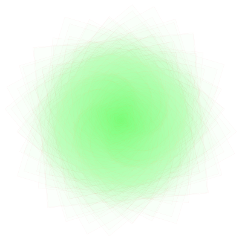
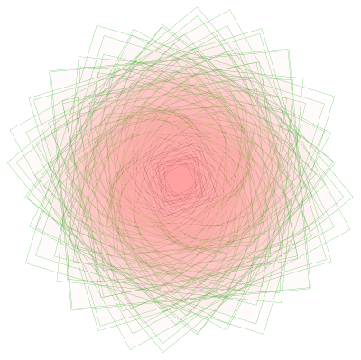

Greetings!
Welcome to fermibot. This is where imagination is combined with Mathematics
I am glad you visited this page. Since you are already here, we will do a quick intro about what this
site is really about.
Mathematical Art: I started off this site in 2013 as a blog to showcase some Mathematical Art which I did using Wolfram Mathematica. I have published 'Art' related posts until about the beginning of the year 2017. My interest later on drifted towards Probability, Statistics and Simulation and started creating more pages related to the illustration of the concepts.